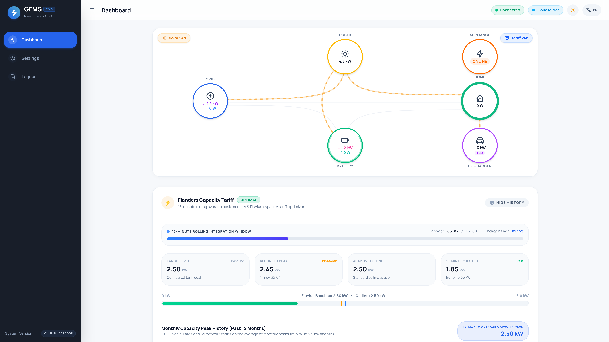

Guide des Onduleurs Hybrides & du Stockage LiFePO4 Enerlution
Manuel complet pour électriciens & propriétaires couvrant le câblage parallèle BT 51.2V & empilable HT (LFPWall-5000, LFPWall-10K-V2, Roller-16K, GroundHV-2500 & GH02-5324), le paramétrage dans l'application Enerlution et la configuration optimale dans GRID-EMS (GEMS).

70:B3:D5 / E4:5F:01) et l'empreinte des registres Modbus, lit en temps réel la télémétrie PV, Batterie (SOC/SOH) et Réseau grâce à un cadencement intelligent des registres rapides/lents, exécute un bridage solaire progressif au Watt près (1 W) lors des prix spot négatifs, et coordonne la recharge VE et les pompes à chaleur autour de votre réserve batterie.
Section 1 : Écosystème d'Onduleurs & de Batteries Enerlution (BT/LV vs HT/HV)
Contrairement aux marques limitées à une seule architecture, Enerlution conçoit deux classes de tension strictement distinctes : des systèmes de stockage monophasés Basse Tension 51.2 V (LV) et des tours empilables triphasées Haute Tension 150–600 V (HV). Avant toute pose ou connexion de câble, vérifiez impérativement que votre modèle de batterie correspond exactement à la classe de tension de votre onduleur hybride.
- Architecture A — Basse Tension 51.2 V (
LFPWall-5000,LFPWall-10K-V2,Roller-16K) : Câblée exclusivement en parallèle sous 51.2 V (P+surP+,P-surP-). Raccordez-la uniquement aux onduleurs hybrides Basse Tension 48V/51.2V (Enerlution HY / L3–L6 LVou onduleurs LV 48V compatibles tels queSolis -L). Ne câblez jamais des modules muraux ou mobiles LV en série ! - Architecture B — Haute Tension Empilable (
GroundHV-2500,GH02-5324+ PDU/BCU) : Les blocs individuels s'empilent en série sous un boîtier de contrôle Haute Tension dédié PDU / BCU (~153 V – 500+ Vdc). Raccordez-la uniquement aux onduleurs hybrides triphasés Haute Tension (Enerlution HYTH-5K..12K/L5–L12 HV). Maintenez le sectionneur de sécurité HV (MSD) / disjoncteur PDU sur OFF et portez des gants isolants HT durant l'assemblage !
1.1 Matrice des Spécifications des Batteries Enerlution
| Modèle de Batterie Enerlution | Classe de Tension | Tension Nominale & Capacité | Charge / Décharge Max. | Famille d'Onduleurs Associée |
|---|---|---|---|---|
| LFPWall-5000 (Murale LiFePO4) |
Basse Tension (LV) (Parallèle) |
51.2 Vdc • 102 Ah5.22 kWh (45–57.6 V) |
Charge : 40 A (~2.05 kW)Décharge : 75 A (~3.84 kW) |
Enerlution HY / L3–L6 LV(ou Solis LV -L) |
| LFPWall-10K-V2 (Murale Haute Capacité) |
Basse Tension (LV) (Parallèle) |
51.2 Vdc • 204 Ah10.44 kWh (45–57.6 V) |
Charge : 90 A (~4.61 kW)Décharge : 140 A (~7.16 kW) |
Enerlution HY / L3–L6 LV(ou Solis LV -L) |
| Roller-16K (Mobile sur Roulettes) |
Basse Tension (LV) (Parallèle) |
51.2 Vdc • 314 Ah16.08 kWh (45–57.6 V) |
Classe intensif 0.5 C(Jusqu'à ~ 150 A / ~7.6 kW) |
Enerlution HY / L5–L6 LV(ou Solis S6-EH1P/3P-L) |
| GroundHV-2500 + PDU (Tour Empilable HV) |
Haute Tension (HV) (Empilement Série) |
51.2 V / 52 Ah (2.5 kWh/bloc)7.5 – 20+ kWh (3–8 blocs) |
~25 – 50 A DC HT( 5 – 12 kW continu) |
Enerlution HYTH-5K..12K(Hybride HV Triphasé) |
| GH02-5324 + BCU (Grande Tour HV) |
Haute Tension (HV) (Empilement Série) |
Modulaire Haute Tension15.0 – 42.0 kWh |
~50 A DC HT( 10 – 15+ kW continu) |
Enerlution HYTH-8K..12K(Hybride HV Triphasé) |
1.2 Séries d'Onduleurs Hybrides Enerlution & Dimensionnement Câbles / Protections
| Série d'Onduleur | Phases Réseau AC | Modèle GEMS | Câble DC Batterie & Protection Externe |
|---|---|---|---|
| Enerlution HY / L3–L6 (LV) (3.0 / 3.6 / 5.0 / 6.0 kW) |
Monophasé ( 230 Vac) |
enerlution_inverter |
Cuivre 25 mm² (5 kWh) ou 35–50 mm² (10–16 kWh+) via disjoncteur DC MCCB bipolaire non polarisé (125 A – 200 A, ≥80 Vdc) |
| Enerlution HYTH / L5–L12 (HV) (5.0 / 6.0 / 8.0 / 10.0 / 12.0 kW) |
Triphasé ( 3×400V+N) |
enerlution_inverter |
Câbles HV double isolation 6 – 10 mm² (1000 Vdc) via disjoncteur HV intégré au PDU & sectionneur MSD |
Section 2 : Manuel Pas-à-Pas de Câblage Batterie & Compteur Intelligent
Mettez hors tension le disjoncteur AC du tableau électrique, l'interrupteur-sectionneur DC PV, le disjoncteur DC externe / interrupteur PDU HV ainsi que tous les boutons d'alimentation des modules batterie avant de raccorder tout câble de puissance ou de communication.
2.1 Les Deux Topologies de Câblage : Parallèle BT 51.2V vs Tour Empilable HT
Architecture A — Câblage des Batteries BT 51.2V (LFPWall-5000, LFPWall-10K-V2, Roller-16K)
- Disjoncteur DC MCCB bipolaire externe non polarisé : Installez un disjoncteur DC bipolaire non polarisé ou un sectionneur porte-fusibles DC
gBat(≥ 80 Vdc;100–125 Apour une seuleLFPWall-5000,160–200 Apour uneLFPWall-10K-V2ouRoller-16K) entre le parc batterie et les cossesBAT+ / BAT-de l'onduleur. - Règle d'équilibrage en parallèle : Pour 2 à 3 packs en parallèle, reliez des ponts de longueur strictement identique (
P+surP+,P-surP-) et prenez le départBAT+sur la borneP+du Pack 1 (Maître) et le départBAT-en diagonale sur la borneP-du dernier pack. Pour 4 packs ou plus en parallèle, tirez des départs protégés par fusibles de longueur identique (25–35 mm²) depuis chaque batterie vers des jeux de barres DC en cuivre étamé calibrés à250–400 A. - Terre de protection (
⏚ PE) : Reliez la borne de masse M6⏚du châssis de chaque batterie murale ou mobile directement au bornier PE de l'onduleur avec un conducteur cuivre vert/jaune≥ 6 mm².
Architecture B — Câblage des Tours Haute Tension (GroundHV-2500 / GH02-5324 + PDU/BCU)
- Empilement mécanique & ancrage mural : Mettez à niveau le socle métallique contre un mur porteur. Empilez verticalement le nombre requis de briques batterie HV (minimum
3–4 × GroundHV-2500=~153–204 Vdcafin de dépasser la tension d'amorçage duHYTH), vissez les pattes latérales anti-basculement entre chaque étage, puis emboîtez la tête de contrôle Haute Tension PDU / BCU au sommet. - Connecteurs DC HV & verrouillage de sécurité : Vérifiez que le disjoncteur HV du PDU est sur OFF et que toute fiche orange de sectionnement manuel de sécurité (MSD) est retirée. Acheminez les câbles de stockage HV double isolation
6–10 mm²(1000 Vdc) depuis les connecteurs protégésHV+ / HV-du PDU vers les entréesBAT+ / BAT-de l'onduleurHYTHjusqu'au clic de verrouillage, puis raccordez les goujons de terre⏚ PEdu socle et du PDU au bornier de terre de l'onduleur.
2.2 Brochage du Câble BMS CAN & Adressage DIP Multi-Batteries
Les batteries Enerlution établissent une communication BMS en boucle fermée (SOC %, SOH %, tension du pack, réduction thermique et enveloppes de courant de charge/décharge) sur bus CAN via un cordon RJ45 reliant le port CAN de la Batterie Maître / du PDU au port BMS / CAN de l'onduleur Enerlution :
| Broche RJ45 | Couleur T568B | Port Batterie / PDU Enerlution | Port BMS / CAN Onduleur |
Notes de Câblage |
|---|---|---|---|---|
| Broches 1 & 2 | Blanc-Orange / Orange | RS485-B / RS485-A (Optionnel) | RS485-B / RS485-A | Non utilisé en mode CAN |
| Broches 3 & 6 | Blanc-Vert / Vert | Masse Signal GND |
Masse Signal GND |
Masse de référence |
| Broche 4 | Bleu Uni | CAN-H (CAN High) |
CAN-H (CAN High) |
CAN-H Obligatoire |
| Broche 5 | Blanc / Bleu | CAN-L (CAN Low) |
CAN-L (CAN Low) |
CAN-L Obligatoire |
| Broches 7 & 8 | Blanc-Marron / Marron | Réservé / Blindage GND | Réservé / Blindage GND | Vérifier l'étiquette du câble usine |
- Cordons d'interconnexion parallèle & micro-interrupteurs DIP (à régler strictement HORS TENSION) :
- Pack batterie unique : Laissez les commutateurs DIP
ADDdans leur position usine autonome (0000tout surOFF, ouAddress 1selon la fiche BMS V1/V2 fournie). - Plusieurs packs LV en parallèle (
LFPWall/Roller) : Chaînez des cordons CAT5e/CAT6 depuis le Pack Maître 1Link Out / RS485-B→ Pack Esclave 2Link In / RS485-A→ Pack Esclave 3Link In. Attribuez des adresses binaires séquentielles hors tension : Maître (Pack 1) = Adresse1(ON OFF OFF OFF), Esclave 1 (Pack 2) = Adresse2(OFF ON OFF OFF), Esclave 2 (Pack 3) = Adresse3(ON ON OFF OFF), Esclave 3 (Pack 4) = Adresse4(OFF OFF ON OFF). Si votre bloc DIP comporte un pôle de terminaison sur le dernier interrupteur, basculez cette terminaison surONsur le pack physiquement le plus éloigné. - Association de batteries Enerlution 51.2V avec un onduleur LV tiers (ex. Solis) : Vérifiez que le protocole BMS Enerlution correspond à l'onduleur cible (
Pylon / Solis CANsur les broches 4 & 5 ; commutable par DIP ou via l'utilitaire USB-RS485 BMS Monitor d'Enerlution si livré d'usine sur un autre profil OEM).
- Pack batterie unique : Laissez les commutateurs DIP
2.3 Câblage du Compteur Intelligent RS-485 Externe (CHINT DTSU666 & Eastron SDM630)
Pour assurer le suivi autonome de la batterie en mode autoconsommation (Self-Consumption) et la mesure par phase de toute l'habitation, tirez un câble RS-485 paire torsadée blindée (9600 bps, 8N1, Adresse compteur 1) depuis le compteur intelligent du tableau général jusqu'au bornier Meter / 485 de l'onduleur Enerlution :
| Modèle de Compteur Intelligent | Compteur RS485-A (+) |
Compteur RS485-B (-) |
Paramétrage Bus Requis |
|---|---|---|---|
| CHINT DTSU666 (Triphasé) | Borne 24 |
Borne 25 |
Adresse 1 • 9600 8N1 |
| CHINT DDSU666 (Monophasé) | Borne 5 |
Borne 6 |
Adresse 1 • 9600 8N1 |
| Eastron SDM630-Modbus V2 | Borne A / 485A |
Borne B / 485B |
Adresse 1 • 9600 8N1 |
Contrôle du sens des tores CT : Clipsez tous les transformateurs de courant (CT) sur les conducteurs de phase principaux juste en aval du compteur du gestionnaire de réseau (en amont de tous les disjoncteurs domestiques, bornes de recharge VE et onduleurs solaires/batteries) avec les flèches des tores orientées strictement dans le sens Réseau → Maison/Charges (Grid → Home/Load).
2.4 Séquence Sécurisée de Démarrage Progressif (Soft-Start) & d'Arrêt
- Vérification à froid de la polarité : Tous disjoncteurs coupés (OFF), vérifiez la polarité
BAT+ / BAT-au voltmètre DC. - Fermez d'abord le sectionneur DC : Basculez le disjoncteur DC MCCB bipolaire LV sur ON (ou insérez la fiche de sécurité HV MSD puis basculez le disjoncteur HV du PDU sur ON) pendant que le BMS est encore en veille.
- Réveillez le BMS Maître / PDU : Maintenez appuyé le bouton
POWER / SWde la batterie Maître ou du PDU HV (2–3 secondes) afin que le circuit interne de précharge alimente en douceur les condensateurs de l'onduleur. Vérifiez que la LED verteRUNest fixe/clignotante normale et que la LED rougeALMest éteinte. - Mettez sous tension le PV & le Réseau AC : Basculez l'interrupteur DC PV sur ON, puis enclenchez le disjoncteur Réseau AC sur ON.
POWER Maître/PDU 3 s pour mettre le BMS en veille → Disjoncteur DC MCCB / PDU sur OFF (patientez au moins 5 minutes avant toute intervention sur les bornes HT !).
Section 3 : Mise en Service Pas-à-Pas dans l'Application Enerlution
Téléchargez l'application mobile officielle Enerlution (iOS App Store / Google Play) pour configurer la communication Wi-Fi/LAN, valider le dialogue BMS, sélectionner le profil du compteur intelligent et laisser les limites de puissance active déverrouillées pour GEMS.
3.1 Connexion Locale en Bluetooth ou Point d'Accès Wi-Fi
- Insérez fermement le module de communication Wi-Fi / LAN Enerlution dans le port inférieur
COM / Wi-Fide l'onduleur. - Activez le Bluetooth et le Wi-Fi sur votre smartphone (coupez temporairement les Données Mobiles si vous rejoignez le point d'accès Wi-Fi local portant le numéro de série du dongle afin que le téléphone ne coupe pas la liaison hors ligne).
- Ouvrez l'application Enerlution, sélectionnez Mise en service locale / Débogage appareil (Local Commissioning / Device Debugging), connectez-vous avec vos identifiants Installateur (Installer), puis associez la clé de communication à votre réseau Wi-Fi 2.4 GHz ou Ethernet LAN filaire (réservez impérativement une adresse IPv4 DHCP statique sur votre routeur !).
3.2 Liste Complète des Paramètres de l'App Enerlution pour la Compatibilité GEMS
| Paramètre App Enerlution | Valeur Requise | Pourquoi ce réglage exact est indispensable pour GEMS |
|---|---|---|
| Type & Protocole Batterie (Battery Type & Protocol / Battery Settings) |
Lithium-Ion (CAN) (Profil Enerlution / Pylon) |
Active la télémétrie BMS en boucle fermée (SOC %, SOH %, tension pack, courant temps réel & sécurité thermique). Vérifiez que l'état batterie affiche Normal / Standby / Charging (State 1–5, jamais 7 Offline). |
| Mode de Fonctionnement EMS (EMS Working Mode / Energy Management Mode) |
Self-Consumption PAS Full Off-Grid / Static Force |
Ordonne à l'onduleur Enerlution de stocker de manière autonome le surplus PV diurne dans vos modules LFPWall ou GroundHV et de décharger instantanément pour couvrir les charges domestiques et les pointes du soir ! |
| SOC Minimum / de Réserve (Minimum / Reserve SOC / End-of-Discharge SOC) |
10 % (Raccordé réseau standard) 15 % – 20 % (Avec secours EPS) |
Préserve la longévité des cellules LiFePO4 (90 % DoD) tout en conservant une réserve de secours en cas de coupure réseau si des circuits critiques sont câblés sur la sortie EPS / Backup. Gardez Max Charge SOC = 100% pour l'équilibrage cellulaire. |
| Compteur Intelligent Externe (External Smart Meter / Meter / CT Settings) |
Enable →CHINT DTSU666 ou SDM630 |
Active la mesure d'import/export inférieure à la seconde sur l'onduleur (Address 1, 9600 bps) et remonte les puissances compteur en direct dans GEMS. Effectuez un test bouilloire de ~2 kW dans l'application pour confirmer la polarité positive en soutirage ! |
| Contrôle de Puissance Active / Limite d'Export (Active Power Control / Export Limit) |
Disabled / Unlimited (0) (Sauf obligation légale du GRD) |
Crucial ! Laisser le zéro-export statique Désactivé (Disabled) dans l'App Enerlution autorise l'injection solaire rentable et les Certificats Verts, tout en permettant à GEMS d'écrire dynamiquement des consignes d'écrêtage au Watt près (1 W) (de 0 W à Puissance Nominale W) dès que les prix spot deviennent négatifs ! |
| Communication Modbus (Modbus Communication — RS-485 & TCP Server) |
Slave ID : 1 • Débit : 9600 8N1 Port Modbus TCP : 502 |
Correspond exactement aux paramètres natifs du pilote enerlution_inverter de GEMS aussi bien en LAN/Wi-Fi (TCP :502) qu'en liaison directe USB-vers-RS485 (9600 8N1). |
Section 4 : Intégration & Optimisation d'Enerlution dans GEMS
Ouvrez l'interface web GEMS (https://gems.local ou l'adresse IP du boîtier), rendez-vous dans Paramètres, cliquez sur l'icône cadenas 🔒 en haut à droite de l'en-tête, puis saisissez votre Code PIN installateur afin d'activer le Mode installateur certifié.
4.1 Découverte Automatique & Ajout (Paramètres → Appareils)
GEMS intègre la reconnaissance native des préfixes MAC IEEE OUI (70:B3:D5 et E4:5F:01) ainsi que l'identification ASCII du modèle et du numéro de série Enerlution : un clic sur Analyser le sous-réseau dans l'onglet Scanner détecte automatiquement les onduleurs Enerlution présents sur le port 502 ! Vous pouvez également établir une liaison directe USB-vers-RS485 (/dev/serial/by-id/..., 9600 bps, 8N1, Slave ID 1) pour une fiabilité industrielle sans Wi-Fi :


| Champ Appareil GEMS | Valeur Recommandée | Importance de ce Paramètre |
|---|---|---|
| Compteur Réseau Principal | P1 Serial Meter (p1_serial) |
Ajoutez votre compteur numérique P1 en premier ! Il fournit à GEMS les courants triphasés officiels et le calcul exact du pic quart-horaire de capacité (Flandre) en complément du compteur interne Enerlution. |
| Modèle matériel | Enerlution Hybrid Inverter( enerlution_inverter) |
Active le cadencement bus de 80 ms, la mise en cache 5 minutes des métadonnées, la télémétrie SOH/SOC et le bridage de puissance active fixe au Watt près (1 W). (Remarque : si une batterie Enerlution 51.2V est raccordée à un onduleur Solis LV, sélectionnez le modèle Solis !). |
| Adresse IP ou Port Série | IP statique réservée (ex. 192.168.1.130)ou /dev/serial/by-id/... |
Privilégiez Ethernet filaire ou USB-RS485 dès que possible ; en Wi-Fi, vérifiez la qualité du signal 2.4 GHz (RSSI > -65 dBm) et configurez un bail DHCP statique sur le routeur. |
| Port TCP & ID Modbus | Port : 502 • Modbus ID : 1 |
Correspond au port Modbus TCP standard et à l'identifiant esclave RS-485 1 d'Enerlution. |
| Puissance Nominale (kW) (Rated Power) |
Puissance AC nominale plaque signalétique (ex. 3.6, 5.0, 6.0, 8.0, 10.0, 12.0) |
Ne laissez jamais à 0 ! Délimite avec exactitude le plafond d'écrêtage actif au Watt près de GEMS selon la puissance AC physique de l'onduleur. |
| Autoriser le Bridage (Allow Curtailment) |
Coché (✓) | Autorise GEMS à appliquer des limites exactes en Watts lors des prix spot EPEX négatifs ou en mode zéro-export, puis à libérer automatiquement la pleine production. |
| Intervalle d'Interrogation (s) (Poll Interval) |
3 s (RS-485 / LAN filaire) 5 s (Clé Wi-Fi 2.4 GHz) |
GEMS met en cache les registres statiques ASCII et les compteurs cumulés pendant 5 minutes afin que chaque cycle rapide ne lise que les registres compacts de puissance et de SOC ! |
| Raccordement de Phase (Phase Wiring) |
L1, L2 ou L3 (1P HY / L3–L6)ou L1-L2-L3 (3P HYTH) |
Identifie précisément la phase du disjoncteur sur les installations monophasées pour assurer une protection rigoureuse des fusibles principaux par phase. |
| Options Compteur & Batterie | Grid Meter : Coché (✓) si DTSU/SDM câblé Battery : Coché (✓) + kWh exacts ( 5.2, 10.4, 16.1, 10.0, 15.0...) |
Affiche en direct le SOC % et les Watts de charge/décharge LFPWall / GroundHV sur le synoptique énergétique et synchronise le surplus solaire VE avec l'état de la batterie ! |
Section 5 : Bonnes Pratiques de Stratégie GEMS, Coordination VE & Tarifs


5.1 Profils d'Optimisation Régionaux (Paramètres → Stratégie)
🇧🇪 Profil A : Flandre (Peak Shaving)
- Mode :
Flanders Mode (Peak Shaving) - Plafond de pointe de capacité :
2.5 kW(standard) ou3.0–3.5 kW(PAC + VE). - Marge d'écrêtage (Buffer) :
200 W - Bridage actif :
Coché (✓), Seuil de base0.00 €/kWh - Bouclier GSC : Saisissez
€0(PV récent) ou la valeur exacte de vos certificats verts (€250–€450/MWh). GEMS maintient l'injection solaire Enerlution jusqu'à-GSC/1000 €/kWh! - Fonctionnement : La boucle
Self-Consumptiond'Enerlution décharge la batterie pour absorber les pointes de cuisson/PAC tandis que GEMS module la borne VE avant tout dépassement quart-horaire.
🇳🇱 Profil B : Pays-Bas (Saldering)
- Mode :
Netherlands Mode (Smart Saldering) - Bridage actif :
Coché (✓) - Seuil prix d'injection :
0.00 €/kWh(ou le seuil de pénalité d'injection de votre fournisseur). - Fonctionnement : Le surplus PV diurne remplit d'abord vos batteries Enerlution
LFPWall/GroundHV, puis pilote la recharge VE Raedian (6A–32A) et l'eau chaude SG-Ready. Une fois la batterie à 100 % durant les heures à rendement négatif, GEMS régule la sortie Enerlution par pas de 1 Watt pour ramener l'injection réseau exactement à0 W!
🌿 Profil C : Tarif Fixe / Bi-Horaire Eco
- Mode :
Eco (Max Self-Consumption) - Bridage actif :
Décoché (☐)(sauf contrat comportant des pénalités d'injection négative). - Protection fusibles réseau : Renseignez le calibre exact du disjoncteur général (
25A / 32A / 40A) et réglezMeter Offline Fallback = 0 A. - Fonctionnement : Autoconsommation solaire pure et autonome : Enerlution priorise la charge batterie, GEMS oriente l'excédent solaire vers les VE et relais thermiques, et les fusibles généraux restent protégés 24h/24.
5.2 Coordination du Stockage Enerlution avec les Bornes VE (Wallbox Raedian)
- Priorité au surplus solaire en journée : Placez votre borne Raedian NEO / NEX / Gemini en mode
PV Only (Solar)ouEcosur le Tableau de bord GEMS. Comme la boucle locale d'Enerlution absorbe d'abord le premier excédent solaire dans la batterie domestique, GEMS attend automatiquement que le surplus résiduel dépasse votre seuil de démarrage VE (ex.1.4 kWen monophasé) avant d'augmenter le courant de charge — évitant ainsi que la borne VE ne vide une batterie domestique déchargée ou n'entre en pompage avec elle ! - Recharge VE intelligente aux heures les moins chères : Activez Heures VE les moins chères (Smart EV Cheapest Hours dans
Paramètres → Stratégie, ex.3–4 heures les moins chères) conjointement à votre formule tarifaire dans Contrat d'énergie (Paramètres → Contrat d'énergie). Si vous programmez une recharge nocturne à forte puissance tout en souhaitant préserver votre batterie Enerlution pour la pointe matinale du foyer, planifiez la charge VE pendant les plages où la Fenêtre de décharge (Discharge Window) optionnelle de l'App Enerlution est mise en pause, ou plafonnez le courant VE sous votre seuil de capacité flamand.
Section 6 : Liste de Vérification & Matrice de Dépannage
6.1 Liste de Contrôle en 6 Points avant Remise au Client
- Vérification BMS & SOH : Assurez-vous qu'aucune LED rouge
ALMn'est allumée sur les modulesLFPWall,RollerouGroundHVet vérifiez que les valeursSOC %etSOH %en direct s'affichent dans l'App Enerlution (Battery State = Charging / Discharging / Standby). - Statut En ligne & Fenêtre Debug GEMS : Dans Paramètres → Appareils, vérifiez que
Enerlution Hybrid Inverteraffiche ● En ligne. Cliquez sur Debug et contrôlez la tension réseau (~230 V), une puissance PV cohérente et le SOC batterie en direct. - Contrôle de libération du bridage 1 Watt : Vérifiez dans l'onglet Journal qu'en fonctionnement normal à prix positif, GEMS enregistre
Released active power limit (40400=0)sans aucune erreur d'écriture. - Test de polarité avec une bouilloire : Faites chauffer une bouilloire d'environ ~2 kW et vérifiez sur le Tableau de bord GEMS que la consommation maison augmente de ~2 kW tandis que la batterie Enerlution monte progressivement en décharge pour compenser la charge.
- Sauvegarde de la configuration : Dans Paramètres → Infos système, cliquez sur Exporter la configuration (.json).
- Verrouillage du Mode installateur certifié : Cliquez sur l'icône cadenas 🔒 dans l'en-tête de Paramètres pour verrouiller les réglages critiques des appareils et des disjoncteurs.
6.2 Diagnostic des Symptômes & Matrice de Dépannage
| Symptôme Observé | Cause Racine Probable | Action Corrective sur Site |
|---|---|---|
L'état batterie indique Offline (7) ou Fault (6) |
Câble CAN branché sur le port Link/RS485 au lieu de CAN, protocole BMS erroné ou commutateurs DIP modifiés sous tension. |
Éteignez tous les modules, réglez des adresses DIP ADD uniques, raccordez le câble RJ45 (Broche 4 CAN-H, Broche 5 CAN-L) strictement entre le port CAN Maître/PDU et le port BMS de l'onduleur, puis sélectionnez Lithium-Ion (CAN) dans l'App Enerlution. |
L'onduleur HV HYTH ne reconnaît pas la tour GroundHV-2500 |
Nombre de blocs HV en série inférieur au minimum requis, fiche MSD orange mal verrouillée ou disjoncteur PDU sur OFF. | Vérifiez le nombre minimal de modules pour atteindre la tension d'amorçage (≥ 3–4 blocs), verrouillez la fiche orange MSD, enclenchez le disjoncteur HV du PDU sur ON, puis appuyez sur le bouton POWER du PDU. |
GEMS signale Connection refused ou i/o timeout sur :502 |
Clé Wi-Fi décrochée sur une bande 5 GHz, changement d'adresse IP par DHCP ou mauvais Slave ID. | Associez la clé exclusivement à un SSID Wi-Fi 2.4 GHz (ou utilisez Ethernet filaire / USB-RS485 direct 9600 8N1), fixez une réservation DHCP sur le routeur et vérifiez Modbus ID = 1. |
| L'onduleur plafonne la production PV même lorsque les prix spot sont positifs | Le Zéro-Export statique / Active Power Limit a été laissé activé dans l'App Enerlution. | Ouvrez l'App Enerlution → Active Power / Export Control et réglez sur Disabled / Unlimited, afin de laisser GEMS libérer (40400=0) et activer (40400=1) dynamiquement le bridage. |
| La batterie se recharge depuis le réseau AC dès qu'une charge domestique démarre | Tores CT du DTSU666 / SDM630 inversés ou inversion des fils RS485-A / B / repiquages de tension de phase. |
Orientez les flèches des tores CT dans le sens Réseau → Maison/Charges, vérifiez les bornes 24 (A+) & 25 (B-) du DTSU666 et confirmez la correspondance entre tensions L1/L2/L3 et tores CT1/CT2/CT3. |
| L'écrêtage plafonne à une puissance en Watts erronée | Le champ Rated Power (kW) est mal renseigné sur la fiche appareil dans GEMS. |
Modifiez l'appareil Enerlution dans Paramètres → Appareils et saisissez la puissance AC nominale exacte de la plaque signalétique en kW (ex. 5.0, 8.0, 10.0, 12.0). |
6.3 Vérification en Direct via les Journaux de Diagnostic
Les installateurs peuvent contrôler en temps réel la télémétrie Enerlution et les écritures d'écrêtage au Watt près dans l'onglet Journal de GEMS ou via le Terminal Cockpit (:9090) :
# Inspecter en direct les lectures Enerlution et les consignes de limitation de puissance via Cockpit Terminal : sudo journalctl -u gems.service -f | grep -i "Enerlution" # Sortie nominale attendue lors de la connexion, d'un bridage à prix négatif et de la libération : [INFO] EnerlutionPoller [Enerlution HYTH-10K]: Connected via tcp://192.168.1.130:502 (ID: 1) [INFO] EnerlutionPoller [Enerlution HYTH-10K]: Set active power limit to 1450 W [INFO] EnerlutionPoller [Enerlution HYTH-10K]: Released active power limit (40400=0)
https://ems.newenergygrid.com) depuis Paramètres → Serveur Cloud pour bénéficier du diagnostic prévisionnel sur 24 heures à distance, de la vérification télémétrique en direct et de la gestion centralisée de flotte par New Energy Grid & The Charge Grid.